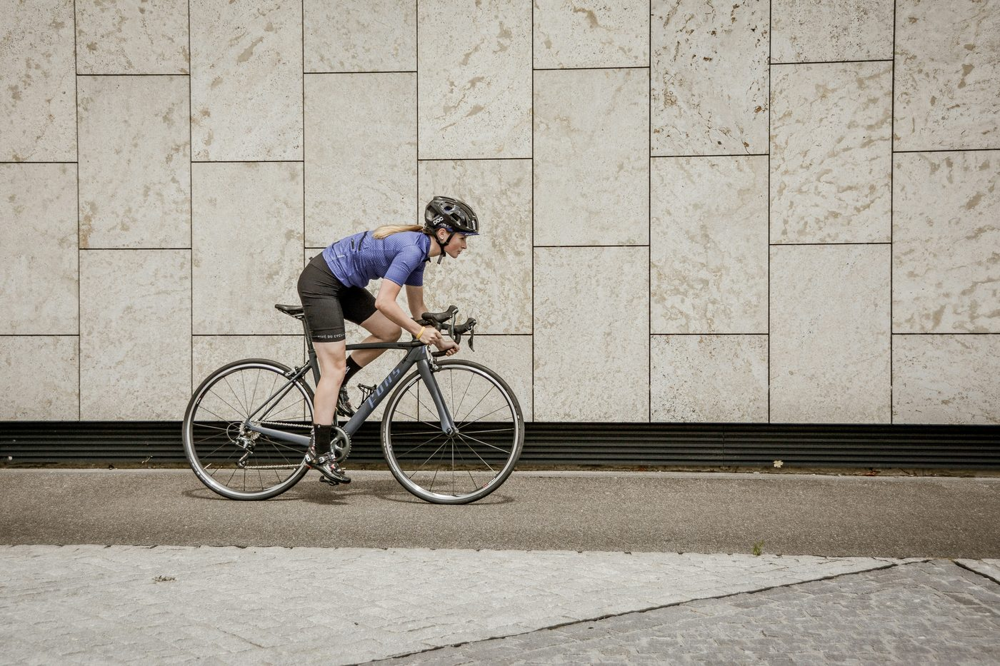

Home · Find a coach · Coach profile
Coach directory
Elena Marsh
Road, track and cyclo-cross coaching from Harrogate, North Yorkshire — with a strength-first approach for time-constrained amateur riders.
Profile details

Qualifications & status
- Qualification
- ABCC Level 3 (example entry)
- Directory status
- Verified — illustrative state
- Status checked
- Illustrative only — a live record would show a real checked date
- Region
- Harrogate, North Yorkshire, England
In the live directory, “Verified” would mean ABCC has checked this coach's qualification record and the coach has approved their profile content, with a real checked date. Here it demonstrates the design only — it confirms nothing about any real coach.
Disciplines
- Road
- Track
- Cyclo-cross
Specialisms
- Strength training for cyclists
- Masters riders (40+)
- Time-trial preparation
- Returning-to-competition plans
Approach
Elena works from the rider's week, not from a template. Programmes are built around the hours actually available, with gym work periodised so it supports the riding rather than competing with it. Every plan is reviewed against the rider's own data and their goals for the season, and riders are encouraged to ask why as often as what.
Coaching approach text is illustrative placeholder copy for layout purposes, awaiting the editorial and consent checks that real profile content would receive.
- Coaches since
- Illustrative — 2016
- Based in
- Harrogate, North Yorkshire
- Coaching format
- Remote & in-person (example)
- Languages
- English (example)
Contact route (concept)
In the live directory, this panel would send an enquiry to the coach through ABCC without revealing either party's email address. In this prototype the fields are disabled and nothing is sent or stored.
How verification status works
ABCC would check qualification status and the coach's consent before a profile appears in public search. A public profile would show its checked date.
- Verified — qualification record checked by ABCC; profile content approved by the coach.
- Pending review — withheld from public search until ABCC completes its check.
- Status lapsed — removed from current-coach search until the record is renewed and checked.
The profile deliberately carries no testimonials and no endorsement language beyond the status fields above, so the design cannot overstate ABCC's involvement in any coach's practice.